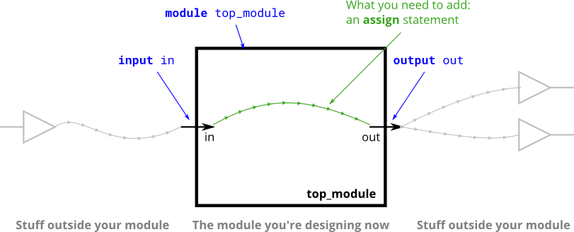
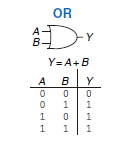
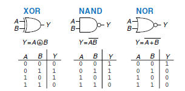
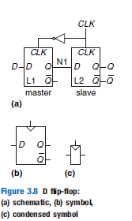
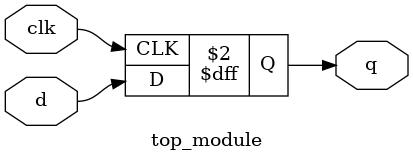
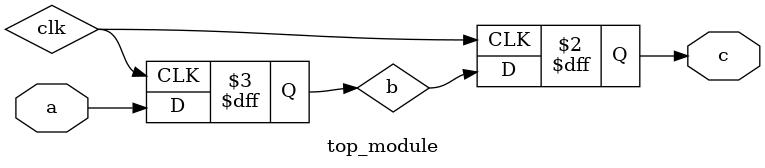

Verilog-电路建模
Verilog是一种类C的硬件描述语言（Hardware Description Language）。描述电路的方式有很多，最直接的方式是通过描述电路的结构，也就是每个电子元件如何连接。这种方式看似低效，但借助现代编程语言的诸多特性（如面对对象，泛型，函数式编程），可以构建极为复杂的集成电路。这类语言的代表是Chisel。
另一种描述方式则是通过对于输出与输入在空间与时间变化的描述来建模，不妨称之为行为建模。这种描述方式抛弃了对于底层的电路的控制权，将其交给综合器来处理。但这种方式隐藏了底层电路的实现，于是也就更简单易懂。Verilog主要采用这种方式建模电路。

这是一个一位全加法器电路，一位表明它只能实现1+1或1+0或0+0的操作，并且它可以取一个进位，并且输出一个进位。通过本节与下节的学习，我们将能够实现这个电路的功能。尽管这个电路很简单，在学了下一节后，进行简单的抽象后我们可以将许多个基本加法单元连接在一起形成一个多位的加法器，并实现一个真正的并行进行运算加速。
int main()
每个C程序都有一个入口函数，约定俗成的称为main函数。而每一个Verilog程序也有一个入口，综合器从这里开始综合电路。一个入口可以是下面这个样子的。
module top_module(
input in,
output out );//这里定义了输入输出
assign out = in;//这里描述了这个module的行为
endmodule
在下一节中我们会继续介绍有关于module的事情。
assign关键字
assign被称为连续赋值关键字。所谓的连续赋值，是当等号右端的值发生改变时，左端的值也会重新计算。从电路的角度来看，这描述的是导线连接。
让我们来看一个例子
例 https://hdlbits.01xz.net/wiki/Wire

题目要求将out和in用一根导线连接在一起，可以立刻想到用assign关键字来描述这个电路。
module top_module( input in, output out );
assign out = in; //当in改变时out也会改变
endmodule
例 https://hdlbits.01xz.net/wiki/Zero
操作符
assign表达式等号右端的值可以为一个表达式，有了操作符，我们可以将多个变量用操作符连接在一起形成一个复杂的表达式，增加了我们可以描述的电路。
与算数运算不同，数字电路中只有1和0，最基本的操作符只有非，与，或，异或。对于加减法，我们均可以通过以上操作符来实现，可以算作语法糖。之所以称“非”这些操作符为最基本的，是因为它们直接描述了最基本的门电路。
一输入门电路

另一门电路是非门（NOT gate）或称反相器（inverter），相对应的逻辑运算为非（NOT）。非的逻辑关系非常简单，如果输入是0，输出为1。如果输入是1，则输出为0。它符号表示为一条小横线。在逻辑运算中，非运算的优先级最高。非门由于很常用，它的图标表示为输出上的一个小圆圈。
在Verilog中用~表示非门。
例 https://hdlbits.01xz.net/wiki/Notgate
module top_module( input in, output out );
assign out = ~in;
endmodule
二输入门电路
对于二输入门电路，我们要记住的只有与门，或门与异或门与它们和非门的组合。二输入电路的输出比一输入多了一倍，为了方便记忆，我们可以记忆它们的特征而不是完整的真值表。


与门(AND gate)当且仅当两个输入均为1的时候输出1，或门(OR gate)当且仅当两个输入均为0的时候输出0。可以发现它们的真值表正好是互补的。在Verilog中，与门用&，或门用|表示。与门的优先级比或门高，而非门的优先级比它们都高。
练习 https://hdlbits.01xz.net/wiki/Andgate

异或门（XOR gate）则不同，当两个输入不同时输出1，否则输出0。可以观察到的是，异或门在输入有奇数个1的时候输出1，有偶数个则输出0。因此有时也称异或门为奇偶校验器。异或门在Verilog中用^来表示，它的优先级介于与门和或门之间。其他门电路属于与门或门异或门与非门的组合，只要记住这三个门电路的输出，然后取反就可以了。
练习
https://hdlbits.01xz.net/wiki/Xnorgate
https://hdlbits.01xz.net/wiki/Norgate
https://hdlbits.01xz.net/wiki/Wire_decl
https://hdlbits.01xz.net/wiki/7458
选择操作符
由于C是指令语言，它的指令都是顺序执行，有时需要根据指令做出一些选择，在C中，通过逻辑控制流程有if语句。同样的，在verilog中，？: 操作符可以实现类似的效果。你可以把1与0的电路中的处理过程理解为指令，通过一个门电路就是执行一个指令，？：实现的是从两个输入中根据第三个输入选择一个输出。
你可能会好奇，这在电路中是如何实现的呢，是不是电路中有个小开关，根据1与0改变位置呢？这种实现已经超出了数字电路的范畴，它属于MEMS。很多时候实现一个功能不一定要直接实现，我们只要输出和输入匹配就行了。想一想选择器的输入输出是什么呢？当第三个输入为0时，输出应该和第一个输入一样，无论第二个输入为什么，而当第三个输入为1时，输出应该和第二输入一样，无论第一个输入为什么。

通过一些技巧（卡诺图），我们就可以归纳出选择器的布尔表达式是$Y = D_{0}\overline{S} + D_{1}S$在布尔表达式中，乘法表示与，加法表示或，而$\overline{S}$则表示非。你可以带入输入来验证这个表达式的正确性，通过这个表达式，我们就可以构建出门电路。

你也可以通过FPGA实现这个，不过更多的时候我们还是通过：？来实现选择器。
例 https://hdlbits.01xz.net/wiki/Mux2to1
module top_module(
input a, b, sel,
output out );
assign out = sel ? b:a;
endmodule
?的前面为作为选择的逻辑变量，如果这个变量为1，则选择:左边的变量，如果为0则选择:右边的变量。
常用的操作符还有很多，我们将在后面讲解使用，这里给出表格方便查找。优先级由上至下递减。
| 操作符 | 含义 |
|---|---|
| ~ | 非 |
| *,/,% | 乘法，除法，取模 |
| +,- | 加法，减法 |
| <<,>> | 逻辑左移，右移 |
| <<<,>>> | 算术左移，右移 |
| <,<=,>,>= | 比较运算 |
| ==,!= | 相等性运算 |
| &,~& | 与，与非 |
| ^,~^ | 异或，同或 |
| |，~| | 或，或非 |
| ? : | 三目操作符 |
可以发现Verilog的操作符与C非常类似，值得注意的是在C中常用的逻辑操作符是~ && ||，而Verilog中则是~ & |，我们将在下一节中介绍它们的区别。
用assign实现全加器
例 https://hdlbits.01xz.net/wiki/Fadd
为了实现全加器，我们需要知道全加器的布尔表达式。我们可以通过和上面一样的方法，先写出输入输出，再使用一些技巧归纳出布尔表达式，最后进行化简。然后在Verilog中实现就好了。
| cin | a | b | sum | cout |
|---|---|---|---|---|
| 0 | 0 | 0 | 0 | 0 |
| 0 | 0 | 1 | 1 | 0 |
| 0 | 1 | 0 | 1 | 0 |
| 0 | 1 | 1 | 0 | 1 |
| 1 | 0 | 0 | 1 | 0 |
| 1 | 0 | 1 | 0 | 1 |
| 1 | 1 | 0 | 0 | 1 |
| 1 | 1 | 1 | 1 | 1 |
这里直接给出布尔表达式为
$$ sum = a \oplus b\oplus cin $$
$$ cout = ab + cin(a+b) $$
于是可以写出程序
module top_module(
input a, b, cin,
output cout, sum );
assign sum=a^b^cin;
assign cout = a&b | (cin & (a^b));
endmodule
always
以下是always的语法
always @ (event)
[statement]
always @ (event) begin
[multiple statements]
end
以always关键字开始，接下来是一个@()，括号内的内容被称为敏感列表。有多种模式
always@(*)
[statement]
always@(a or b)
[statement]
如果省略具体变量表示只要always内任意量发生变化，always内部的表达式都会被重新执行。而标注具体变量则只会在这些变量变化时重新执行内部的表达式。
always@(posedge clk or b)
[statement]
posedge关键字表明为上升沿敏感，negedge关键字表明为下降沿敏感。上升沿敏感表明会在信号从0到1变化的时候触发，下降沿反之。如果有多个信号，以or隔开。但是不能同时混用上升沿和下降沿。
always@(posedge clk or negedge b) //invaild!
接着是代码块，begin与end内的代码均为always被触发时执行的代码。如果只有一个代码，可以不用写。
使用always描述组合逻辑
当使用always描述组合逻辑时，我们使用的是第一种敏感列表，也就是
always@(a or b)
[statement]
这可以起到和assign关键字差不多的效果。但随着使用，发现这种方式并不是很好，因为如果你在括号内修改一个变量的名字，而没有加入到敏感列表中，会出现难以察觉的bug。于是verilog引入了下面一种方式
always@(*)
[statement]
这就和上面的效果是一样的。always用来描述组合逻辑有着诸多好处，然而，并不是所有always描述的电路都是组合逻辑。如果你错误的描述了一个其他类型的电路，编译器并不一定会报错，这会带来一些隐形的bug。SystemVerilog引入了一系列关键字来解决这个。
always_comb
[statement]
如果这其中生成不是组合逻辑电路，编译器会报错。这和C++中的override关键字起到了一样的效果。我们来用这个重写上面的全加器。
module top_module(
input a, b, cin,
output cout, sum );
always_comb begin
sum = a^b^cin;
cout = a&b | (cin & (a^b));
end
endmodule
使用always描述时序逻辑
为了学习如何描述时序逻辑，我们需要知道什么是时序逻辑。时序逻辑与组合逻辑的最大区别在于，组合逻辑的输出只取决于输入，而时序逻辑的输出还取决于前一短时间内的输入。为什么要这样呢？因为很多功能都需要保存当前状态，比如一个计数器，需要知道已经数到几了。
锁存器与触发器
如果之前设计选择器的思路来设计这类电路是行不通的，因为布尔表达式的输出只与输入有关，与时间无关。所以不能通过求布尔表达式的方式来设计。所以，该如何设计呢？我们通过电路的稳态来实现，我们来看一个最简单的SR锁存器。
SR锁存器

可以发现的是其中两个或非门的输出都接入到对方的输入。那么怎么分析出这个电路的状态呢？此时我们只能通过假设然后验证。
如果$R=1$且$S=0$，N1中至少有一个输入是1，由或门的特性知道，输出是1，再取非，就是0。那么N2的两个输入都是0，由或门的特性知道，输出是0，再取非，就是1。我们可以再验证，N1两端都是1，所以输出是0，符合我们之前的猜想，电路是稳定的。其他状态不难验证，我们可以得到如下真值表。

可以发现当S，R都为0，SR锁存器会保存前一刻的状态，而当S为1，R为0时，Q被设置为1，当S为0，R为1时，Q被设置为0。我们舍弃S，R均为1的状态，不给它任何明确意义。SR锁存器既可以保存状态也可以设置状态。

D锁存器
SR锁存器的设计上有一些缺陷，输入既需要控制何时改变它的内容，何时保留它的内容，又要控制它的内容是什么，这无疑增加了电路设计的难度。如果我们的锁存器可以接受两个信号，一个控制可不可以改变它的内容，一个控制它的内容，这无疑简化了其他电路的设计难度。于是有了D锁存器。

可以发现D锁存器可以通过clk控制能不能改变它的内容，当clk为0时，保留内容，而当clk为1时，内部的状态由D输入决定。
D触发器
尽管数字电路相对于模拟电路舍弃了许多物理细节，帮助我们抽象电路，但是不可忽略的一点就是信号的传输速度。传输速度对于门电路最大的影响就是会产生意外的输出，比如电路的稳定状态应该输出1，然而从改变电路输入到电路输出变为1之间有一段时间，这段时间中输出有可能是1，有可能是0，不受控制。这时候我们需要一个电路，可以等待一段时间再输出结果不是可以解决这个问题了，于是我们引入了D触发器。

D触发器捕获clk的边沿，即从0变为1或1变为0的过程。只要两个边沿之间的时间大于其中电路的稳定时间，那么这个电路就可以保证是正常工作的。这无疑是简化了电路设计的难度。
//锁存器
reg q,d;
always @(*) begin
if (clk) q<=d;
end
/*
always_latch begin
if (clk) q<=d;
end
*/等价

//触发器
reg q,d;
always @(posedge clk) begin
q <= d;
end
/*
always_ff@ (posedge clk) begin
q <= d;
end
*/等价

阻塞赋值与非阻塞赋值
<=是我们从未见过的赋值符号。在always内我们可以使用两种赋值符号，一个是=，称为阻塞赋值，一个是<=，称为非阻塞赋值。它们有什么区别呢？阻塞赋值，和编程一样，只有当上一条赋值语句执行完后才会执行下一个。而非阻塞赋值则不然，和assign关键字类似，是一起赋值的。我们来看一个例子。
always @(posedge clk)
begin
b=a;
c=b;
end
always @( posedge clk )
begin
b<=a;
c<=b;
end
当第一个上升沿来临时，对于第一段代码，首先b获得了a的值，然后c获得了b的值，完成了值从a到c的传递。对于第二段代码，首先同样b获得了a的值，那么c貌似获得了b的值也获得了a的值，但由于它们是并行执行的，所以c获得的是b在未改变之前的值。直到下一个上升沿来临时，c才能活得b在这个上升沿的值，也就是a的值。
第一段代码只需要一个上升沿就完成了值的传递，而第二段代码需要两个时钟周期。它们综合成的电路也是不一样的。


可见<=用于描述一时刻前后两变量的关系，而=用于描述同一时刻两变量的关系。所以<=更多的用于描述时序电路，而=用于描述组合逻辑电路。
值得一提的时，在always关键字内所有处于等号左边的值都必须声明为Reg类型，而其它不属于这个范畴的都声明为Wire，没有例外。